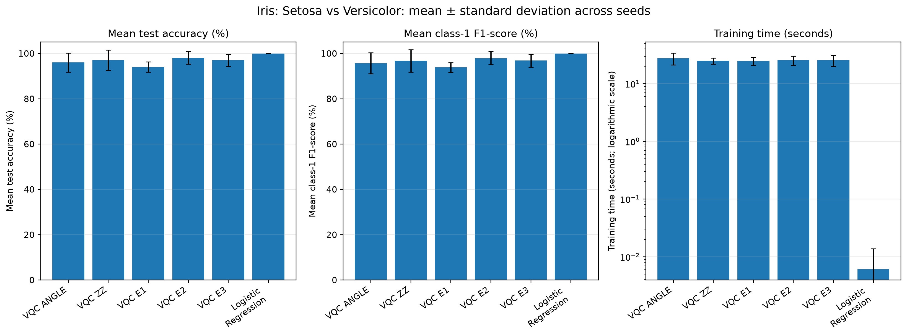
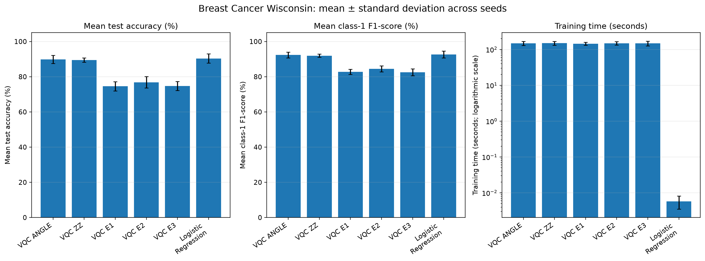
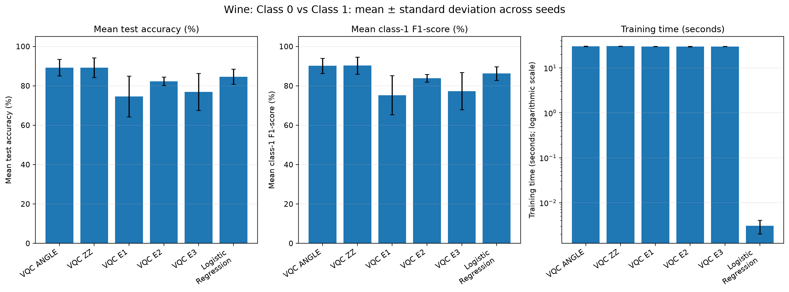
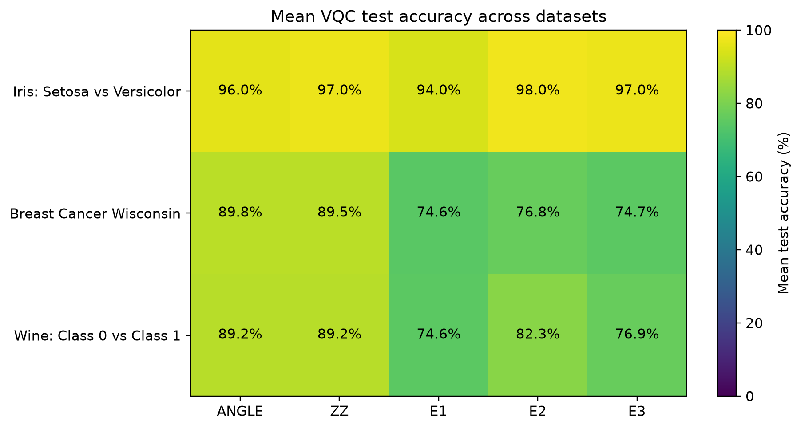
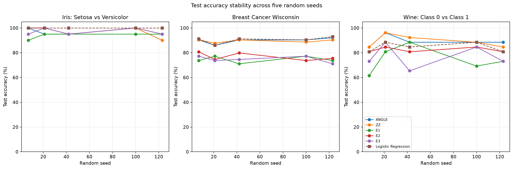

Five key figures: one model comparison per dataset, one encoding heatmap, and one seed-stability plot.





VQC PROJECT — SIMPLE RESULTS EXPLANATION ========================================== What was compared: - Five VQC encodings: ANGLE, ZZ, E1, E2, and E3. - Logistic Regression as the classical baseline. - Three binary datasets and five random seeds per configuration. - Error bars represent standard deviation across seeds. MAIN ACCURACY RESULTS Iris: Setosa vs Versicolor: Best VQC encoding: E2 — 98.00% ± 2.74 percentage points. Logistic Regression: 100.00% ± 0.00 percentage points. Difference (VQC minus baseline): -2.00 percentage points. Breast Cancer Wisconsin: Best VQC encoding: ANGLE — 89.82% ± 2.29 percentage points. Logistic Regression: 90.35% ± 2.63 percentage points. Difference (VQC minus baseline): -0.53 percentage points. Wine: Class 0 vs Class 1: Best VQC encoding: ANGLE — 89.23% ± 4.21 percentage points. Logistic Regression: 84.62% ± 3.85 percentage points. Difference (VQC minus baseline): +4.62 percentage points. HOW TO EXPLAIN THE FIGURES 1. Each dataset dashboard compares test accuracy, class-1 F1, and training time. 2. The heatmap makes it easy to see that no encoding wins on every dataset. 3. The seed plot shows how sensitive the results are to the random seed. 4. Higher accuracy/F1 is generally better; lower runtime is faster. LIMITATIONS TO MENTION - Five seeds give an initial comparison, not proof of statistical significance. - Seeds change both the train/test split and model initialization. - The Wine test set is small, so a few predictions can change accuracy noticeably. - For Breast Cancer, class 1 is benign under scikit-learn's target convention. - These simulator results do not demonstrate quantum advantage. - Runtime depends on the implementation and computer used.